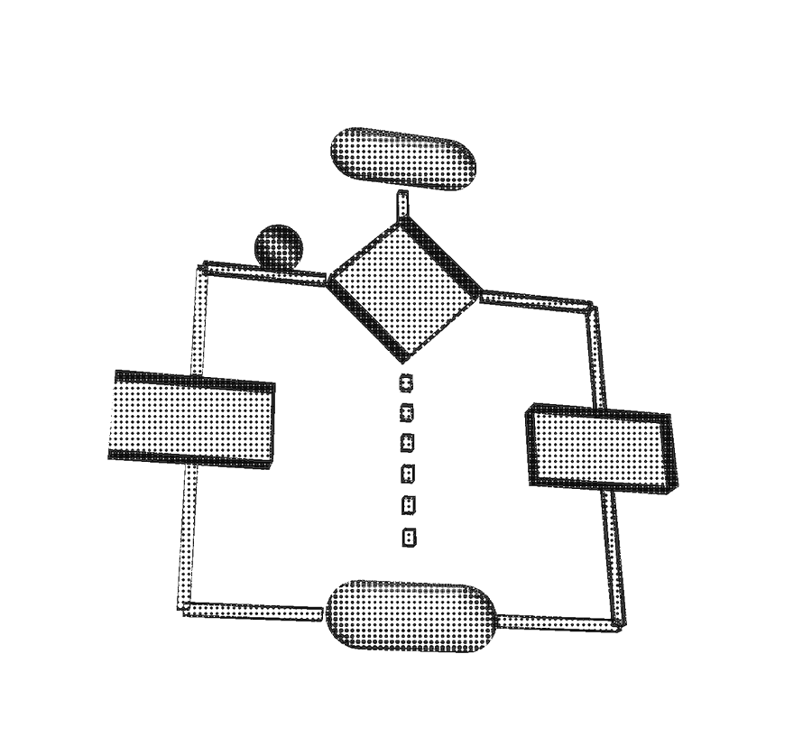

Built on my own time · Live
ForkCast
Paste a written decision, get a flowchart back. Built with Next.js and TypeScript, with every diagram drawn as hand-built SVG.
- Text in, flowchart out. Takes anything from a one-line choice to a multi-page SOP and maps its gates, actors, loops and dead ends.
- Shows what’s missing. Draws unstated paths as dashed lines and lists every inferred step in an assumption ledger.
- The open question. Ends with the one question the source text leaves unanswered.
- Stack
- Next.js 15 · TypeScript
- Export
- SVG · Mermaid
- Status
- Live